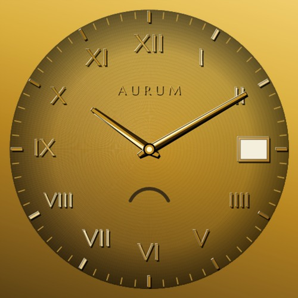
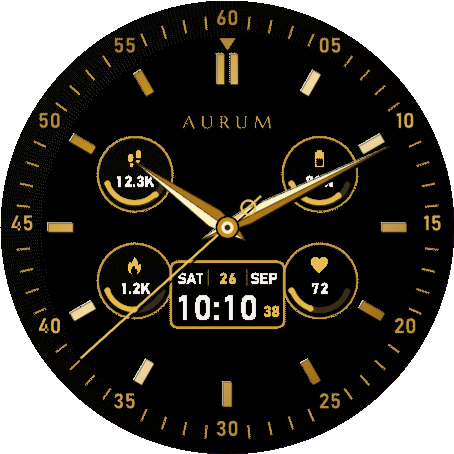
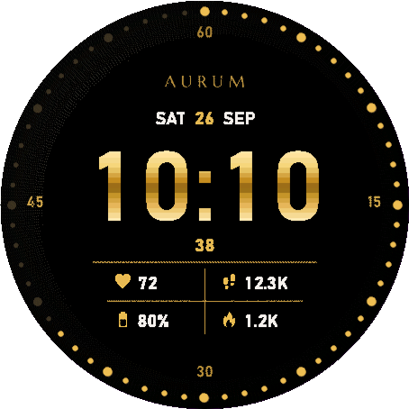

Aurum | A Frameless Gold Garmin Watch Face, Six Finishes
Stock gold watch faces often look flat. Aurum is a Garmin watch face built the way a fine watch dial is built — layered, lit, and finished by hand. It's frameless: no bezel is drawn on screen, so the dial runs all the way to the edge and your watch's display looks as big as it really is.
In short: four Grand Roman dials, a Chronometer and a Digital Luxe face — six finishes in one purchase, switchable any time from the watch face settings.

Aurum
A gold watch face built the way a fine watch dial is built. Frameless, so the dial reaches the very edge of the screen.
⌚ View on Garmin Connect IQWho is this for?
- Owners of a supported Garmin who find the stock watch faces a little underwhelming
- Anyone who felt a drawn bezel ring made their watch's screen look smaller
- People looking for a refined dial that works with a suit or formal wear
- Anyone who wants to switch between analog and digital to suit the day
The six finishes
| Finish | What it looks like |
|---|---|
| Onyx & Gold | Grand Roman numerals in polished gold, a railway minute track at the very edge, a date window at 3 and a power-reserve style battery gauge at 6 |
| Rose Gold | The same Grand Roman dial in pink gold |
| Champagne | The same Grand Roman dial in pale champagne gold |
| Gunmetal & Gold | Brushed steel with a single gold second hand |
| Chronometer | Minute numerals printed right to the edge, applied gold batons, four round gauges (steps, battery, calories, heart rate — or any fields you pick) and a date + digital time cartouche under dauphine hands |
| Digital Luxe | Huge polished-gold digits, a ring of 60 dots at the edge that light up with the seconds, and a 2 × 2 grid of the data you choose |




What goes into the finish?
- No bezel ring is drawn on screen — the dial itself goes edge to edge.
- Numerals and markers have a cast shadow, a bright bevelled edge and a darker facet, so they sit proud of the dial.
- A soleil sunburst ground with fine guilloche engraving and a soft vignette adds depth.
- The numerals are Marcellus serif, drawn as artwork rather than system text.
Key features
| Feature | What it does |
|---|---|
| On the dial | Hours, minutes and seconds; day and date; battery |
| Up to 4 data fields | Choose from heart rate, steps, calories, floors climbed, distance, Body Battery, watch battery or notification count |
| Settings | Finish (six choices), dial tone (black or charcoal), seconds on/off, data fields 1–4 |
| Always-On support | Drops to a thin outlined treatment in low-power mode (the time only, on Digital Luxe), with a small per-minute pixel shift to protect AMOLED screens from burn-in |
Compatible watches
Venu 3 / Venu 3S / Forerunner 265 / Forerunner 265S / Forerunner 965 / fenix 8 AMOLED (43 / 47 / 51 mm) / fenix 9 (43 / 47 mm) / fenix 9 Pro (43 / 47 / 51 mm) / epix Pro (Gen 2) 47 mm / tactix 8 AMOLED (47 mm)
Price and how to buy
Everything is free to use for 24 hours after you install it. When the trial ends, a single one-time unlock (US$5.99, no subscription) keeps all features working.
Once the trial is over, the dial shows a 6-digit code and the URL www.kzl.io/code. Open that URL on your phone, enter the code and pay, and the watch face unlocks automatically within a few minutes. Payment is processed by KiezelPay, not by Garmin (credit card or PayPal). Once you have unlocked it, other supported watches on the same Garmin account do not need a second purchase.
FAQ
Q. Is Aurum free to use?
A. Everything is free for 24 hours after you install it. After the trial, a single one-time US$5.99 unlock keeps all features working. There is no subscription.
Q. Where do I pay?
A. Payment is handled by the third-party service KiezelPay, not by Garmin. When the trial ends, the dial shows a 6-digit code and a URL. Open the URL on your phone and enter the code to buy (credit card or PayPal).
Q. Do the six finishes cost extra?
A. No. Onyx & Gold, Rose Gold, Champagne, Gunmetal & Gold, Chronometer and Digital Luxe all come with one purchase and can be switched any time from the settings.
Q. Which watches are supported?
A. Venu 3, Venu 3S, Forerunner 265, Forerunner 265S, Forerunner 965, fenix 8 AMOLED, fenix 9, fenix 9 Pro, epix Pro (Gen 2) 47 mm and tactix 8 AMOLED.
Q. Does it affect battery life?
A. In the low-power (Always-On) state it switches automatically to a thin outlined treatment (the time only, on Digital Luxe). Fewer lit pixels means less battery drain, and a small per-minute pixel shift protects AMOLED screens from burn-in.
Ready for a better dial?
The 24-hour free trial lets you see how it looks on your own watch. If you like it, unlock it with a single one-time purchase.
⌚ View on Garmin Connect IQ